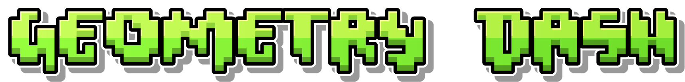

Screenshots & Trailers
Dash, By RobTop.

Swing Gamemode in Dash


Geometry Dash is a rhythm-based platformer game created by Swedish developer Robert "RobTop" Topala and released in 2013. In the game, players control a customizable geometric icon—such as a cube, ship, or wave—navigating through series of hazardous obstacle courses filled with spikes, sawblades, and portals. The core mechanics rely on precise single-tap timing, where every jump and transformation must sync perfectly with dynamic, high-energy electronic soundtracks. Beyond its official levels, Geometry Dash owes much of its massive, long-term success to its robust built-in Level Editor, which allows players to create, share, and play millions of custom user-generated stages online.
Early History